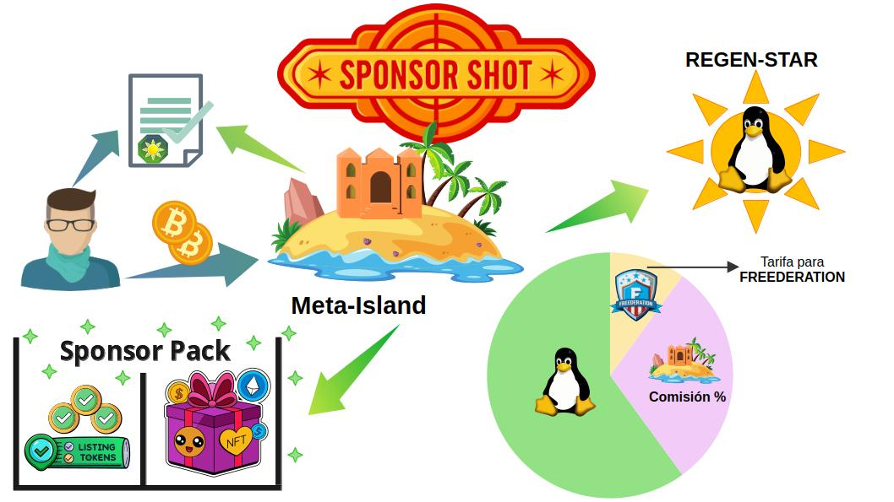
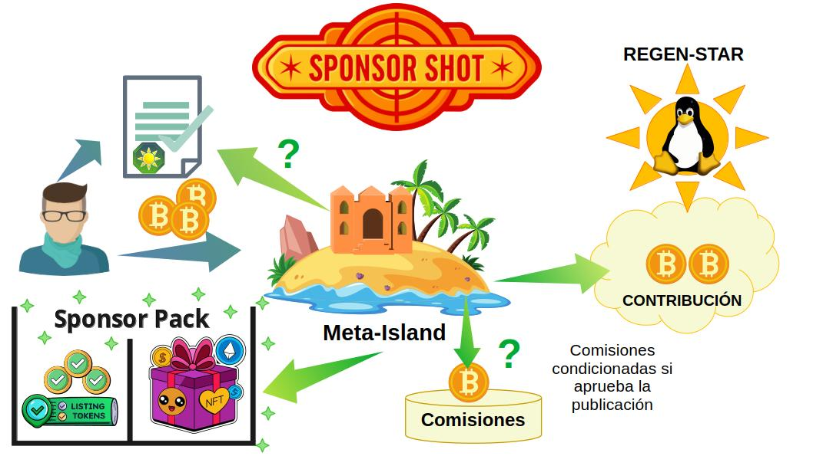

SponsorShots: Patrocinio y Catalogación
El proceso del SponsorShot establece el recaudo financiero que las Regen-Star requieren para gestionar el desarrollo y mantenimiento de los proyectos Open Source. Las Meta-Islas asociadas a un Regen-Star ayudan a la distribución de los tokens del SponsorPack (Combi-Tokens y Listing-Tokens), y gestionan el proceso de promoción de contenidos con sus patrocinadores (Sponsors).
Los SponsorShots son la alternativa de los Zaps de Nostr, con el beneficio adicional de que contribuyen a la sostenibilidad de Bienes Públicos y Open Source. De forma similar al fenómeno del Zapvertising en Nostr, los patrocinadores aportarán una contribución económica a las Meta-Islas que ofrecen contenido de calidad y demuestran un interés genuino de su audiencia.
Recaudo y Prevención del Fraude
El aspecto clave es que a partir del recaudo de cada SponsorShot, una parte se destina al Fondo Común de la Regen-Star. Otro porcentaje se destina a Fondo de Gobernanza de FREEDERATION. Y del monto restante se deduce una comisión. Esta comisión se reparte de la siguiente manera:
- Un porcentaje de la comisión se retribuye al Regen-Planet supervisor de la Meta-Isla, según el parámetro de tarifa de recaudo establecido por la gobernanza del Regen-Planet. Usualmente es el 10%.
- El resto de la comisión corresponde al dueño de la Meta-Isla (90%).

Este sistema de reparto de los SponsorShots brinda mecanismos para prevenir el fraude prevalente en el previo sistema de los Zaps en Nostr: se corrige el problema de las auto-donaciones que manipulan los puntajes de relevancia y fomentan esquemas de confabulación entre cuentas.
La filosofía de la prevención del fraude de la auto-promoción consiste en impedir que el atacante recupere los fondos invertidos en Zaps fraudulentos. Por ende, los fondos de promoción recaudados con los SponsorShots deben destinar una contribución al beneficio de un proyecto de Bienes Públicos, el cuál ha sido avalado por la comunidad y autorizado por la DAO de FREEDERATION.
Gracias al mecanismo de los SponsorShots. se garantiza una contribución recurrente al proyecto de Bienes Públicos y Open Source. Al mismo tiempo se constituye como una medida de prevención de fraude.
Reputación de la Meta-Isla y SponsorShots
La contribución de los SponsorShots aumenta el valor social de la actividad de la Meta-Isla. Precisamente, porque respalda el mérito de contribuir con un genuino proyecto que beneficia a la sociedad, y se refleja directamente en su puntaje de Reputación.
Esa relación entre la Reputación de la Meta-Isla, la legitimidad del proyecto de Bienes Públicos liderado por la Regen-Star, y el compromiso con la calidad de contenidos otorgan un valor especial al inversor o patrocinador.
Interacción en los SponsorShots
A cambio de su contribución económica en el SponsorShot, el inversor obtiene un reconocimiento único, el SponsorPack: Un paquete de NFTs que adquiere importancia en futuras actividades comunitarias dentro de las Meta-Islas.

Cabe destacar que a través de la operación del SponsorShot se establece un mecanismo de comunicación privado donde el patrocinador propone publicaciones para ser promovidas y catalogadas por la Meta-Isla.
La Meta-Isla que recibe un SponsorShot, tiene la potestad de elegir si aceptar el encargo del patrocinador o simplemente otorgar el paquete de NFTs (SponsorPack), según la siguiente casuística:
-
A. Si acepta, se gana una comisión del ingreso del SponsorShot.A.1. Prepara una publicación en borrador y la presenta al patrocinador para confirmar el encargo.A.2. El patrocinador firma digitalmente la aceptación del encargo, autorizando el pago de la comisión extra incluída en el SponsorShot para la Meta-Isla.
-
B. Si NO acepta el encargo, la comisión del SponsorShot se destina enteramente al fondo común del Regen-Planet. -
C. Los SponsorShots sin encargo simplemente otorgan un paquete de NFTs (SponsorPack) y entregan una contribución opcional a la Meta-Isla.
En todos los casos (A, B, C) El patrocinador recibe el SponsorPack que consiste en un grupo de NFTs promocionales (Combi-Tokens), mas un número fijo de Listing-Tokens (5 por defecto).